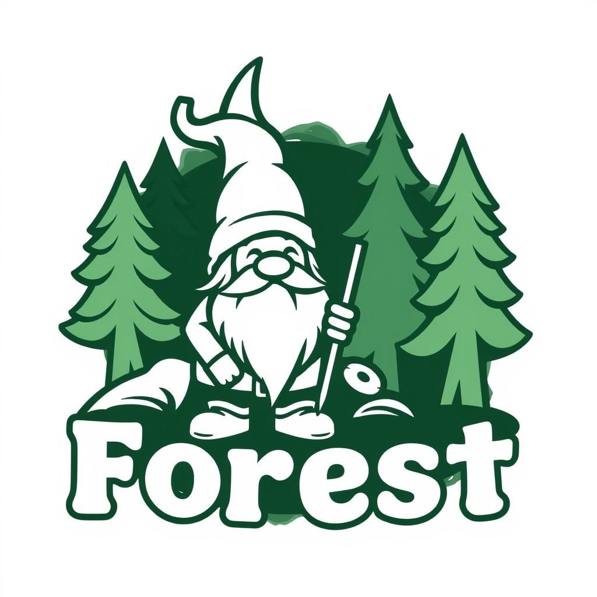

Треугольники
Треугольники — основной способ решения большинства задач. Они не так тривиальны, как кажутся.
Создано объединением "Лес"
Треугольники — основной способ решения большинства задач. Они не так тривиальны, как кажутся.
Создано объединением "Лес"
Нашли ошибку или неточность? Сообщите нам! Контакты можно найти на главной странице .